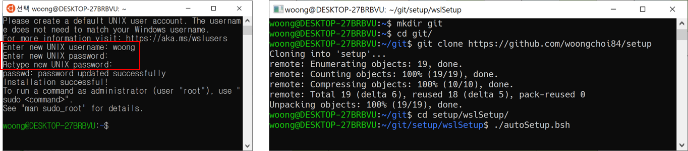

WSL 설치#
Note
WSL은 Windows Subsystem for Linux의 약자로 Ubuntu 환경을 지원함
- Win Key -> 'windows 기능' 검색 -> ‘Windows 기능 켜기/끄기’ 실행
- 'Linux용 Windows 하위 시스템' 활성화
- 재부팅 물어보면 재부팅 (반드시 해야함)
- Win Key -> 'store' 검색 -> 'Microsoft Store' 실행
- 'Ubuntu 18.04 LTS' 설치 (설치 클릭 시 새로 뜨는 창은 닫아 버려도 됨)
사용자 설정 및 필수 패키지 설치#
Warning
password 타이핑 시 변화가 없어보여도 입력되는 것임

- 필수 패키지 설치 (시간이 꽤 걸림)
git clone https://github.com/woongchoi84/setup
cd setup/wslSetup
./autoSetup.bsh
Xming 설치#
Note
Xming (X Server)는 윈도우(Client)에서 리눅스(Host)의 화면을 가져오는 역할을 함
- Xming : 윈도우에서 동작하는 X 서버
- X Window : 플랫폼과 독립적으로 작동하는 윈도 시스템
- 설치: https://sourceforge.net/projects/xming/
- ‘xming’ 구글링 시 맨 위 링크
Xming 자동실행 등록#
Warning
- Xming이 실행 중일 때만 리눅스 상의 화면이 윈도우로 넘어옴 (트레이아이콘 확인!)
- 매번 켜기 귀찮으니 자동실행을 등록하자
- Ctrl + R ->
shell:startup입력 - 프로그램 창이 뜸
- Window 키 누르고 Xming 검색 -> 파일 위치 열기
Programs\Xming폴더의 Xming 바로가기 아이콘을 시작 프로그램 폴더로 복사- 이후 부팅 시에 자동으로 Xming이 실행됨
필수 패키지 설치 내용 관련#
Note
setup/wslSetup 내의 autoSetup.bsh 파일 관련 설명
- 레포지토리(저장소) 변경 및 패키지 변경 사항 업데이트
#! /bin/bash
# ==================================================
# Coded by Woong
# ==================================================
# [Make Backup File]
sudo cp /etc/apt/sources.list /etc/apt/sources.list_bk
# [Change Repository]
sudo sed -i 's/archive.ubuntu.com/ftp.daumkakao.com/g' /etc/apt/sources.list
sudo sed -i 's/security.ubuntu.com/ftp.daumkakao.com/g' /etc/apt/sources.list
# [Update & Upgrade]
sudo apt-get -y update
sudo DEBIAN_FRONTEND=noninteractive apt-get -y full-upgrade
- 필수 패키지 설치 (이건 업데이트 될수도 있음, 그냥 이런게 있구나 참고만)
- nautilus: 파일 관리 프로그램
- gnome-terminal: 그놈 터미널
- firefox: jupyter 및 파이썬 크롤링용
# [Install Essential Tools]
sudo apt-get -y install build-essential
sudo apt-get -y install ftpd ssh git vim-gtk3 nautilus
sudo apt-get -y install x11-apps xfonts-base xfonts-100dpi xfonts-75dpi xfonts-cyrillic dbus-x11
sudo apt-get -y install gnome-terminal gnome-paint
sudo apt-get -y install fonts-unfonts-core fonts-unfonts-extra fonts-baekmuk fonts-nanum fonts-nanum-coding fonts-nanum-extra
sudo apt-get -y install imagemagick-6.q16
sudo apt-get -y install graphicsmagick-imagemagick-compat
sudo apt-get -y install imagemagick-6.q16hdri
sudo apt-get -y install firefox
sudo apt-get -y install language-pack-ko
sudo locale-gen ko_KR.UTF-8
sudo apt-get -y install tcl-dev tk-dev python3-dev python3-pip python3-tk
- TensorFlow 및 파이썬 패키지 관련
# [TensorFlow]
sudo pip3 install --upgrade pip
sudo pip3 install numpy scipy matplotlib pillow pypi progress idx2numpy
sudo pip3 install jupyter jupyterlab
sudo pip3 install tensorflow
- 파일 수정 권한 관련 에러 수정 및 Bash/Vim 환경 설정
Note
- rcfile은 run control 파일
- 보통 환경설정 관련 정보가 담겨있음
# [Remove Minor Warning]
sudo chown -R ${USER}:${USER} ~/.cache
# [Bash Environment Setup]
printf "\nsource\t~/.bashrc_add" >> ~/.bashrc
cp .bashrc_add ~
cp .vimrc ~
source ~/.bashrc
Bash 설정#
Note
우리가 사용하는 터미널의 설정을 할수 있다
~/.bashrc파일
원본 설정 파일인 .bashrc의 수정을 최소화하기 위해 파일 맨 하단만 아래와 같이 수정 (setup/wslSetup/autoSetup.bsh 실행 시 자동으로 됨)
source ~/.bashrc_add
~/.bashrc_add파일- DISPLAY: 화면을 뿌려줄 디스플레이 설정 (이건 뭔가 불완전하다. 더 봐야할듯)
- PS1: 프롬프트 설정으로 색깔, 날짜 등을 어떻게 표시할지 설정
- alias: 단축키 개념으로 긴 커맨드를 줄여서 쓸수 있음
- cd function: 폴더 이동 시 각 폴더 내의 내용물을 자동으로 보여주도록 수정함
export DISPLAY=0:0
export PS1="[\[\e[0;36m\]\u - \[\e[0;37m\]\D{%Y.%m.%d} \t\[\e[0;39m\]]\n\[\e[0;31m\]\${PWD}: \[\e[0;39m\]"
alias src='source ~/.bashrc'
alias g='gvim -p'
alias t='gnome-terminal'
function cd { if (( $#==0 )); then builtin cd ~ && ls; else builtin cd "$@" && ls; fi }
cd